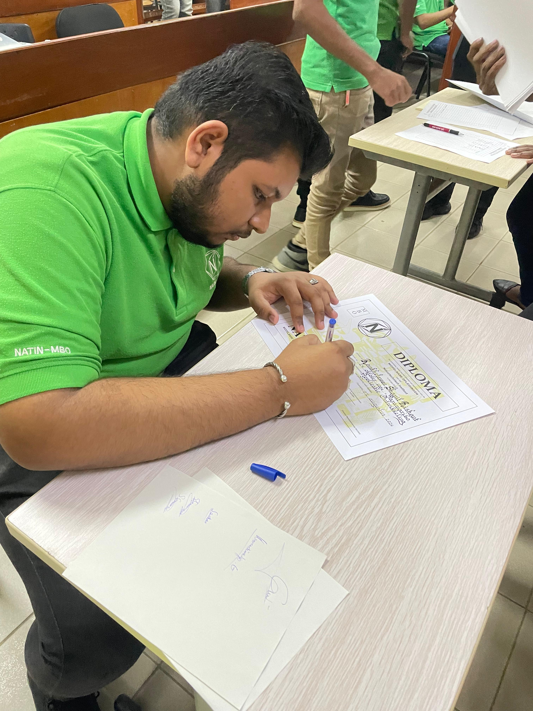

About Me
Hello! My name is Shanil, and I am currently studying Software Engineering at UNASAT. I enjoy working on cars with technology, solving technical problems, and continuously learning new skills that help me grow both professionally and personally.
As a former ICT Employee, I gained hands-on experience supporting users, managing Microsoft 365, troubleshooting hardware and software, configuring networks, and working with Active Directory.

Education
UNASAT
Software Engineering
2024 - Present
Learning programming, networking, cloud computing, Windows Server, Linux, cybersecurity, and enterprise IT infrastructure.
Experience
Former ICT Employee
Providing technical support for users by troubleshooting hardware and software issues, managing Microsoft 365 accounts, Active Directory users, printers, and network-related problems.
Web Development
Developing responsive websites using HTML, CSS, and JavaScript while learning best practices for UI design and user experience.
Cybersecurity
Learning about web application security through DVWA, Burp Suite, SQL Injection, and Cross-Site Request Forgery (CSRF) testing.
Technical Skills
My Journey
2025
Started studying Software Engineering at UNASAT and began developing my programming and networking skills.
2026
Started working in ICT, gaining hands-on experience with Microsoft 365, Active Directory, hardware support, and network troubleshooting.
Future
My goal is to become a Cloud Engineer specializing in Microsoft Azure, networking, cybersecurity, and enterprise infrastructure.
My Interests
Career Goals
Cloud Engineer
Become a Microsoft Azure Cloud Engineer capable of designing, deploying, and maintaining cloud solutions for organizations.
Continuous Growth
Continue earning certifications, learning new technologies, and improving my technical and professional skills every year.
Teamwork
Work in an environment where collaboration, innovation, and continuous improvement are encouraged.
My Motto
"Success isn't about being the fastest. It's about continuously improving every single day."